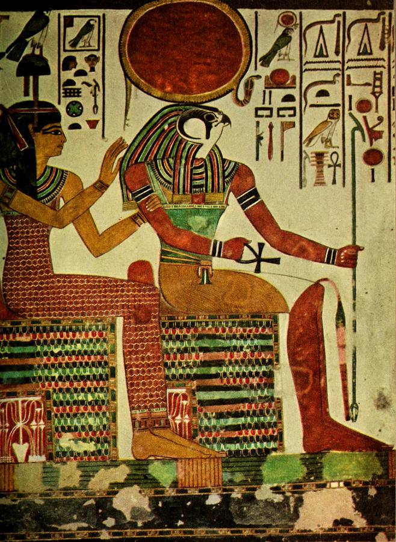
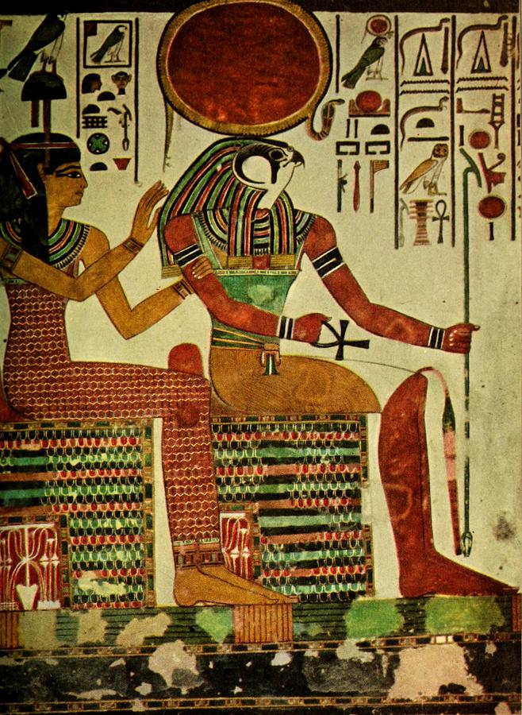

Welcome!
Welcome to Zoe's Egyptology website! This website will be primarily focusing on the intricacies of the mummification process, different theories as to how pyramids are built, as well as different Egyptian artifacts that intrigued me during my visit to the Museum of fine arts in Boston.
What is Egyptology?
Egyptology, the study of pharaonic Egypt, spanning the period c. 4500 BCE to CE 641. Egyptology began when the scholars accompanying Napoleon Bonaparte’s invasion of Egypt (1798–1801) published Description de l’Égypte (1809–28), which made large quantities of source material about ancient Egypt available to Europeans. For a discussion of the long-standing fascination with ancient Egypt.
Written Egyptian documents date to c. 3150 BCE, when the first pharaohs developed the hieroglyphic script in Upper Egypt. The documents of these kings, their successors, and their subjects, as well as the archaeological material of their culture, well preserved by Egypt’s arid climate, provide the source material for Egyptological study.
In 1799 a French engineer found the Rosetta Stone, a trilingual stela with Greek, hieroglyphic, and demotic texts. Knowledge of Coptic permitted the deciphering of the stone’s inscription, a work completed in 1822 by Jean-François Champollion. He and an Italian scholar, Ippolito Rosellini, led a combined expedition to Egypt in 1828 and published their research in Monuments de l’Égypte et Nubie. Karl Richard Lepsius followed with a Prussian expedition (1842–45), and the Englishman Sir John Gardner Wilkinson spent 12 years (1821–33) copying and collecting material in Egypt. Their work made copies of monuments and texts widely available to European scholars. Muḥammad ʿAlī’s government (1805–49) opened Egypt to Europeans and consular agents, and adventurers began to collect antiquities, often in ways that amounted to plunder. From this arose the great European Egyptian museum collections. Auguste Mariette went from the Louvre in 1850 and began excavations at Memphis, where he found the Serapeum. He convinced Saʿīd Pasha, viceroy of Egypt, to found the first Egyptian museum at Būlāq (1858; moved to Cairo, 1903) as well as the Service des Antiquités (1863). Mariette became the first director of this organization, which worked to stop the hitherto uncontrolled digging and collection of antiquities.
The research of Emmanuel de Rougé in France, Samuel Birch in England, and Heinrich Brugsch in Germany established Egyptology as an academic discipline. In 1880 Flinders Petrie brought to Egypt his technique of controlled, scientifically recorded excavation, which revolutionized archaeology; he pushed back the origins of Egyptian culture to 4500 BCE. The British Egypt Exploration Fund (later Society), founded in 1882, promoted excavations using Petrie’s principles, and other professional associations of Egyptologists spread these standards. Adolf Erman and Hermann Grapow published in Berlin the Wörterbuch der ägyptischen Sprache, an exhaustive dictionary of hieroglyphic Egyptian. In 1954 Wolja Erichsen published his demotic lexicon, Demotisches Glossar. The Germans Erman, Eduard Meyer, and Kurt Sethe, the English scholars Francis Llewellyn Griffith and Sir Alan H. Gardiner, and the Czech Egyptologist Jaroslav Černý conducted research that shaped the currently accepted outlines of Egyptian history. James Henry Breasted founded the Oriental Institute at the University of Chicago and pioneered American Egyptology with his survey of Egypt and Nubia (1895–96). He started the Epigraphic Survey in 1924 to make accurate copies of the inscriptions on monuments, which are subject to deterioration from exposure to the elements, and to then publish these records. The group’s current project, which began during the 1990–91 season, is a record of the temple of Amon in Madinat Habu.
American museums opened Egyptian collections in the late 19th and early 20th centuries, and excavations in Egypt helped enlarge their exhibits. The University of Pennsylvania, the Metropolitan Museum of Art (New York City), the Museum of Fine Arts (Boston), the Brooklyn Museum, and the Institute of Fine Arts of New York University all have conducted work in Egypt. The discovery of Tutankhamen’s tomb (1922), as well as Pierre Montet’s excavations of the intact royal tombs at Tanis, heightened public awareness of Egyptology.
Some Egyptian Wall Paintings
 

.jpeg)